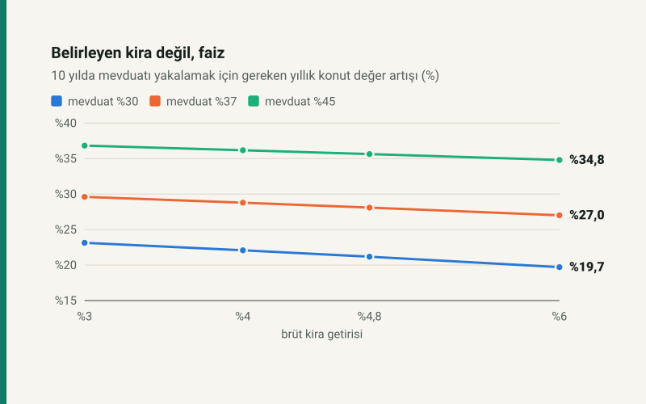

Kısa cevap
Kiraya vermek için alınan konutun getirisini kira değil, değer artışı belirliyor. Brüt kira getirisini %3'ten %6'ya, yani iki katına çıkarmak gereken değer artışını yalnız 2,6 puan düşürüyor. Mevduat faizindeki 8 puanlık bir fark ise eşiği 7 puandan fazla oynatıyor.
Konut, ancak mevduat faizine yakın bir hızla değer kazanacaksa mevduatla yarışır. Aşağıdaki tablo, üç faiz düzeyinde bu hızı veriyor.
Mevduatı yakalamak için gereken değer artışı
| Brüt kira getirisi | Mevduat %30 | Mevduat %37 | Mevduat %45 |
|---|---|---|---|
| %3 | %23,13 | %29,61 | %36,83 |
| %4 | %22,08 | %28,79 | %36,18 |
| %4,8 | %21,17 | %28,10 | %35,64 |
| %6 | %19,71 | %27,01 | %34,81 |
Satırlar arasında fark küçük, sütunlar arasında büyük. Kira yılda 60.000 TL de getirse 300.000 TL de getirse, toplam 5,1 milyon TL'lik yatırımın yanında küçük kalıyor; servetin asıl hareketi konutun kendi değerinden geliyor.
Net getiri ve amortisman
| Brüt kira getirisi | Net kira getirisi | Amortisman süresi |
|---|---|---|
| %3 | %2,42 | 41,3 yıl |
| %4 | %3,27 | 30,6 yıl |
| %4,8 | %3,96 | 25,3 yıl |
| %6 | %4,97 | 20,1 yıl |
Net getiri, kira eksi gider ve kira vergisinin toplam maliyete (fiyat artı alım masrafı) oranı. Kira vergisi 58.000 TL istisna ve götürü ya da gerçek giderden düşük olanıyla hesaplandı. Amortisman, maliyetin ilk yılın net kirasına bölümü; kira arttıkça gerçek süre kısalır.
Varsayımlar
- Kira yılda %25 artar; gider ve vergi de aynı oranda büyür. Her yılın net kirası yıl sonunda mevduata konur.
- Mevduat bir yıllıktır (stopaj %15) ve her yıl aynı faizle yenilenir.
- Satış masrafı, emlakçı komisyonu, satış kazancı vergisi ve boş kalan aylar dahil değildir.
Kendi konutunuz için: kira getirisi hesaplama.
Kaynaklar
- 193 sayılı Gelir Vergisi Kanunu m.21 (mesken istisnası), m.74 (giderler), m.103 (tarife).
- 492 sayılı Harçlar Kanunu (4) sayılı tarife: tapu harcı alıcıdan binde 20.
- 193 sayılı Gelir Vergisi Kanunu geçici 67. madde: mevduat stopajı.
Tablolar sitenin açık kaynaklı kira getirisi modülünden üretilir; vergi kira geliri motorundan, mevduat neti mevduat fonksiyonundan gelir ve otomatik testle yeniden hesaplanır.
Sık sorulan sorular
Kira getirisi kaç olmalı?
Getiri tek başına belirleyici değil: brüt %3 ile %6 arasında mevduatı yakalamak için gereken değer artışı yalnız 2,6 puan değişiyor.
Ev almak mı, parayı mevduatta tutmak mı?
5 milyon TL'lik, %4,8 brüt kira getiren konut, %37 faizli mevduatı 10 yılda ancak yılda %28,1'den hızlı değer kazanırsa geçer.
Kira gelirinin vergisi ne kadar?
Yılda 240.000 TL konut kirasında 58.000 TL istisna ve %15 götürü giderden sonra 2026'da 23.205 TL.